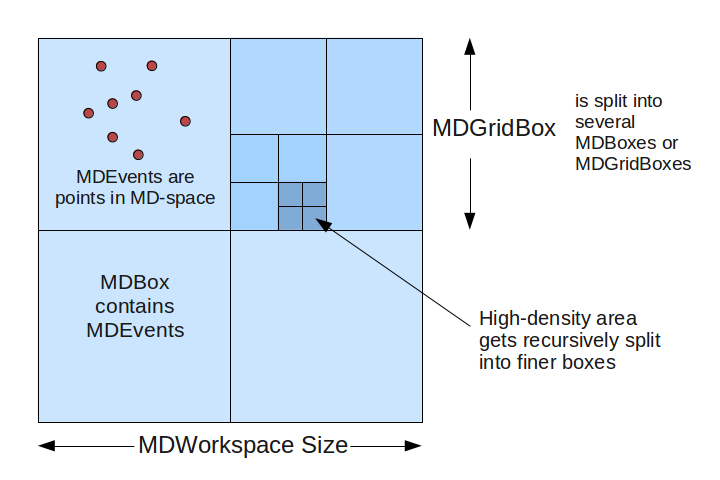

MD Workspace#
The MD Workspace [MDWorkspace] (short for “Multi-Dimensional” Workspace) is a generic data structure holdings points (MDEvents) that are defined by their position in several dimensions.
See also
Description of MDWorkspace#
Dimensions: A MDWorkspace can have between 1 and 9 dimensions.
Each dimension is defined with a name, units, and minimum/maximum extents.
MDEvent: A MDEvent is simply a point in space defined by its coordinates, plus a signal (weight) and error.
The MDLeanEvent type contains only coordinates, signal and error.
The MDEvent type also contains a run index (for multiple runs summed into one workspace) and a detector ID, allowing for more information to be extracted.
The class is named MDEventWorkspace.
Structure#
The MDWorkspace is a container that can hold a large number of MDEvents. The events are organized into “boxes”: types are MDBox and MDGridBox. At the simplest level, an MDWorkspace will be a single MDBox with an unsorted bunch of events.
In order to allow for efficient searching and binning of these events, the boxes are organized into a recursive boxing structure (adaptive mesh refinement). During MDWorkspace construction, if a MDBox is found to contain too many events, it will be split into smaller boxes.

MDWorkspace_structure.png#
The threshold for splitting is defined in CreateMDWorkspace as the SplitThreshold parameter. Each parent box will get split into N sub-boxes in each dimension. For example, in a 2D workspace, you might split a parent box into 4x4 sub-boxes, creating 16 MDBoxes under the parent box (which becomes a MDGridBox). The level of splitting is defined in the SplitInto parameter.
Creating a MDWorkspace#
There are several algorithms that will create a MDWorkspace:
CreateMDWorkspace creates a blank MDWorkspace with any arbitrary set of dimensions.
CreateMD Creates an MDWorkspace in the Q3D, HKL frame.
ConvertToDiffractionMDWorkspace converts an EventWorkspace or Workspace2D from detector space to reciprocal space, for elastic single-crystal or powder diffraction experiments.
ConvertToMD converts workspaces for inelastic experiments.
SliceMD takes a slice out of a MDWorkspace to create a new one.
LoadSQW converts from the SQW format.
File-Backed MDWorkspaces#
For workspaces with a large number of events that would not fit in memory, it is possible to use a NXS file back-end as a data store. The box structure will always remain in memory, but the underlying events will be stored in a file and retrieved only when required. This can be set at creation (CreateMDWorkspace) or when loading from a file, or an in-memory MDWorkspace can be converted to file-backed with the SaveMD algorithm.
Because of disk IO, file-backed MDWorkspaces are slower to process for some operations (e.g. binning or slicing). Some types of visualization and analysis, however, are just as fast with file-backed MDWorkspaces as their in-memory equivalent.
Viewing MDWorkspaces#
Right-click on a MDWorkspace and select:
Show Slice Viewer: to open the Sliceviewer, which shows 2D slices of the multiple-dimensional workspace.
Working with Table Workspaces in Python#
Accessing Workspaces#
The methods for getting a variable to an MDWorkspace is the same as shown in the Workspace help page.
If you want to check if a variable points to something that is an MDWorkspace Workspace you can use this:
from mantid.api import IMDEventWorkspace
mdws = CreateMDWorkspace(Dimensions=3, Extents='-10,10,-10,10,-10,10', Names='A,B,C', Units='U,U,U')
if isinstance(mdws, IMDEventWorkspace):
print(mdws.name() + " is a " + mdws.id())
Output:
mdws is a MDEventWorkspace<MDLeanEvent,3>
MD Workspace Properties#
For a full list of the available properties and operation look at the IMDEventWorkspace api page.
ws = CreateMDWorkspace(Dimensions='2', EventType='MDEvent', Extents='-10,10,-10,10',
Names='Q_lab_x,Q_lab_y', Units='A,B')
FakeMDEventData(ws, UniformParams="1000000")
print("Number of events = {}".format(ws.getNEvents()))
print("Number of dimensions = {}".format(ws.getNumDims()))
print("Normalization = {}".format(ws.displayNormalization()))
for i in range(ws.getNumDims()):
dimension = ws.getDimension(i)
print("\tDimension {0} Name: {1}".format(i,
dimension.name))
bc =ws.getBoxController()
print("Is the workspace using a file back end? {}".format(bc.isFileBacked()))
backEndFilename = bc.getFilename()
Dimensions#
As a generic multi dimensional container being able to access information about the dimensions is very important.
ws = CreateMDWorkspace(Dimensions='3', EventType='MDEvent', Extents='-10,10,-5,5,-1,1',
Names='Q_lab_x,Q_lab_y,Q_lab_z', Units='1\A,1\A,1\A')
FakeMDEventData(ws, UniformParams="1000000")
print("Number of dimensions = {}".format(ws.getNumDims()))
for i in range(ws.getNumDims()):
dimension = ws.getDimension(i)
print("\tDimension {0} Name: {1} id: {2} Range: {3}-{4} {5}".format(i,
dimension.getDimensionId(),
dimension.name,
dimension.getMinimum(),
dimension.getMaximum(),
dimension.getUnits()))
print("The dimension assigned to X = {}".format(ws.getXDimension().name))
print("The dimension assigned to Y = {}".format(ws.getYDimension().name))
try:
print("The dimension assigned to Z = {}".format(ws.getZDimension().name))
except RuntimeError:
# if the dimension does not exist you will get a RuntimeError
print("Workspace does not have a Z dimension")
# you can also get a dimension by it's id
dim = ws.getDimensionIndexById("Q_lab_x")
# or name
dim = ws.getDimensionIndexByName("Q_lab_x")
Accessing the Data#
To access the data of an MDWorkspace you need to convert it to a regular grid, or MD Histogram Workspace.
# Setup
mdWS = CreateMDWorkspace(Dimensions=4, Extents=[-1,1,-1,1,-1,1,-10,10], Names="H,K,L,E", Units="U,U,U,V")
FakeMDEventData(InputWorkspace=mdWS, PeakParams='500000,0,0,0,0,3')
# Create a histogrammed (binned) workspace with 100 bins in each of the H, K and L dimensions
histoWS = BinMD(InputWorkspace=mdWS, AlignedDim0='H,-1,1,100', AlignedDim1='K,-1,1,100', AlignedDim2='L,-1,1,100')
# Or you can also use CutMD, to define bin widths and the cut projection
from mantid.api import Projection
SetUB(Workspace=mdWS, a=1, b=1, c=1, alpha=90, beta=90, gamma=90)
SetSpecialCoordinates(InputWorkspace=mdWS, SpecialCoordinates='HKL')
projection = Projection([1,1,0], [-1,1,0])
proj_ws = projection.createWorkspace()
# Apply the cut with bin widths of 0.1 in H,K and L and integrating over -5 to +5 in E
out_md = CutMD(mdWS, Projection=proj_ws, PBins=([0.1], [0.1], [0.1], [-5,5]), NoPix=True)
Category: Concepts